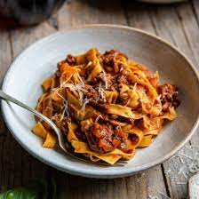

Ragù recipe:
Ingredients:
- 1 pound ground beef
- 1/2 pound ground pork
- 1 onion, finely chopped
- 2 cloves garlic, minced
- 1 carrot, finely chopped
- 1 celery stalk, finely chopped
- 1/4 cup olive oil
- 1 can (28 ounces) crushed tomatoes
- 1/4 cup tomato paste
- 1/2 cup dry red wine
- 1 cup beef broth
- 1 bay leaf
- Salt and pepper to taste
Instructions
- Heat olive oil in a large pot over medium heat. Add onion, garlic, carrot, and celery, and cook until softened.
- Add ground beef and pork, and cook until browned, breaking up the meat with a wooden spoon as it cooks.
- Stir in the crushed tomatoes, tomato paste, red wine, beef broth, bay leaf, salt, and pepper.
- Bring to a simmer and cook, stirring occasionally, for at least 2 hours (or up to 4 hours) until the sauce has thickened and the flavors have melded together.
- Remove the bay leaf before serving the ragù over pasta or polenta.